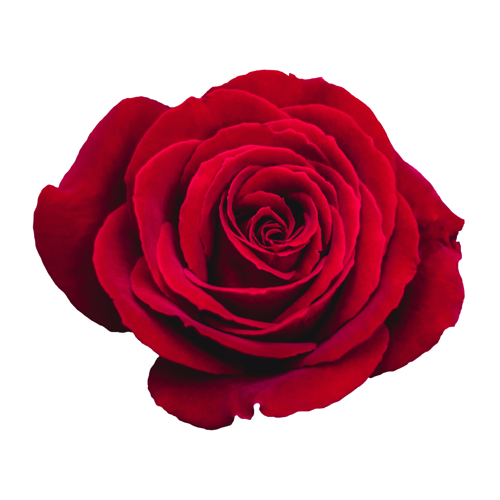

Rufina combines features of several typographic styles with Bodoni forms found in the calligraphy of flexible tip pens. High contrast enables it to work well in text and headlines.
Font available from Google Fonts.
The name Rose comes from the Latin word Rosa. The flowers of the Rose grow in many different colours, from the well-known red Rose or yellow Roses and sometimes white or purple Roses.
Roses are widely used across the world as symbols of love, sympathy or sorrow.
Roses can also mean secrecy or confidentiality. The term “sub rosa”, meaning under the Rose, comes from ancient times. Romans would hang Roses from the ceilings of banquet halls, and it was understood that anything said under the influence of wine was to remain confidential.